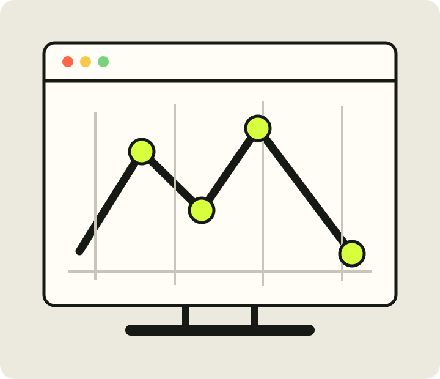

Structure
Semantic HTML gives every page a clear reading order and a durable foundation.
CASA0017 · Web Architecture
I’m Aubree Dai, a UCL CASA student exploring how thoughtful interfaces can turn spatial and real-time data into experiences people can understand.

Current focus
Semantic HTML gives every page a clear reading order and a durable foundation.
JavaScript connects people to maps, live messages, and the data behind them.
Accessible design helps a technical idea remain useful beyond the code itself.